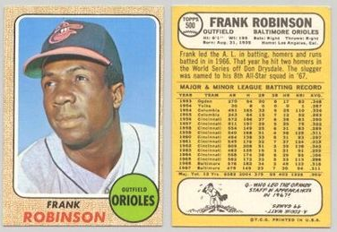
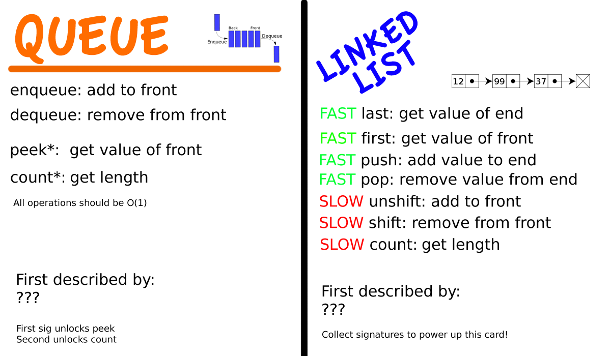

Visualizing
Persistent
Data Structures
What is a
Data Structure?
Data Structures are
"Accidentally"
Complicated
Abstract or
Concrete?


Rules of
Thumb!
Rule #1
Generic Terms are Abstract
Rule #1
Generic Terms are Abstract
"Irregular cases":
- heap
- hash
- trie
Rule #2
Adjectives imply Concreteness
Rule #2
Adjectives imply Concreteness
Unless there's too many:
Self-balancing binary search tree??
Rule #2
Adjectives imply Concreteness
Or too few:
- Associative array
- Priority queue
- Double-ended queue
Rule #3
Eponymous? Concrete.
Rule #3
Eponymous? Concrete.
- Van Emde Boas tree
- Fenwick tree
- Brodal queue
- AVL tree
- AA tree
Rule #3
Proper name? Concrete.
- Judy array
- Patricia tree
- Fibonacci heap
- Hilbert R-tree
NO EXCEPTIONS
Families
Implementations form family trees
Some trees have concrete root nodes, like a B-tree or heap
Others don't: Self-balancing binary search tree
We can extract an API from common characteristics
"It's complicated"
Concrete Consequences






Banker's queue


Persistence
Not persistent
--------O-
Persistence
Not persistent
--------O-
Persistent
-O-O-O-O-O-O-O-O-
Persistence
Not persistent
--------O-
Persistent
-O-O-O-O-O-O-O-O
Fully persistent
/-O-O-O-
-O-O-O-O-O-O-O-O-
Persistence
Not persistent
--------O-
Persistent
-O-O-O-O-O-O-O-O
Fully persistent
/-O-O-O-
-O-O-O-O-O-O-O-O-
Confluently persistent
/-O-O-O-\
-O-O-O-O-O-O-O-O-
Time for graphics!
In closing
"So I'm wracking my brain trying to figure out how to present this, like, mountain of statistical data to you, when suddenly it hits me -- baseball!"
-- me, about 20 minutes ago
Rules of thumb!
Visualize all the things!
DATA STRUCTURES
THE GAME
@dann
dxnn @ github
dann @ bentobox . net
datastructuresthegame . com